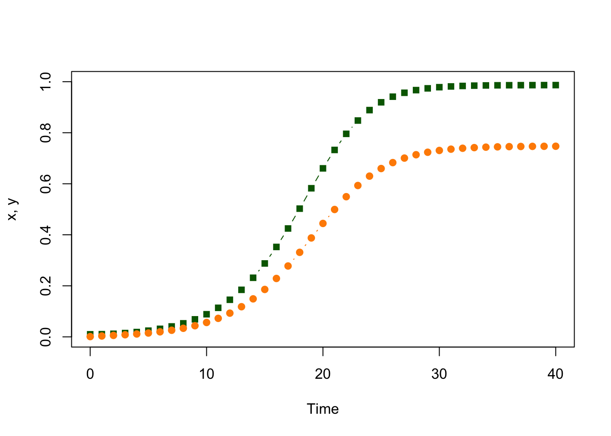
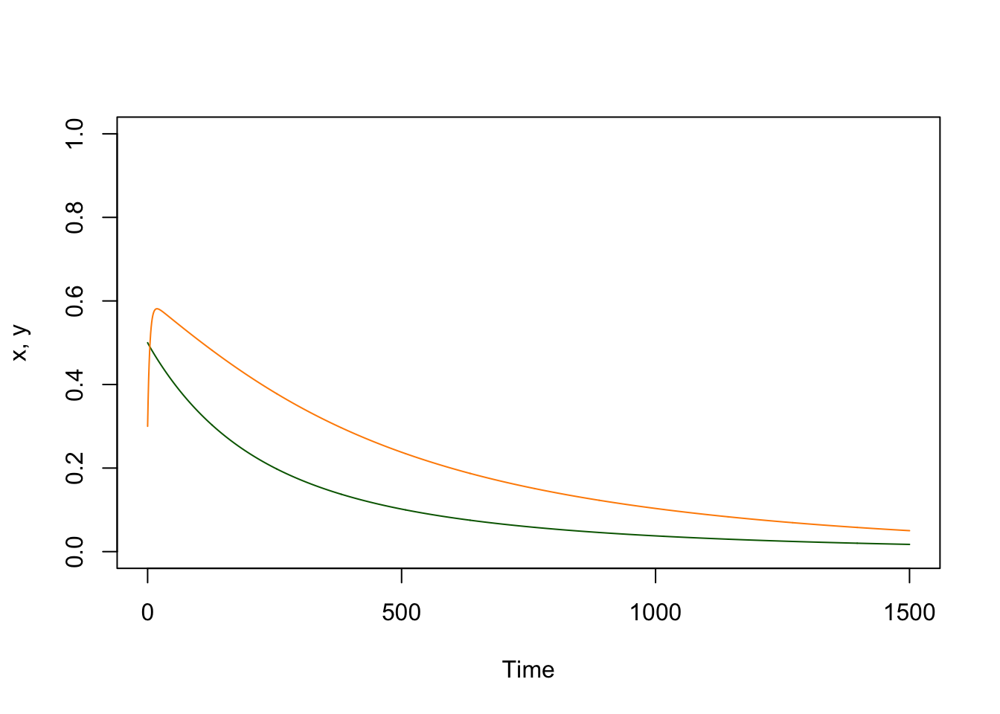
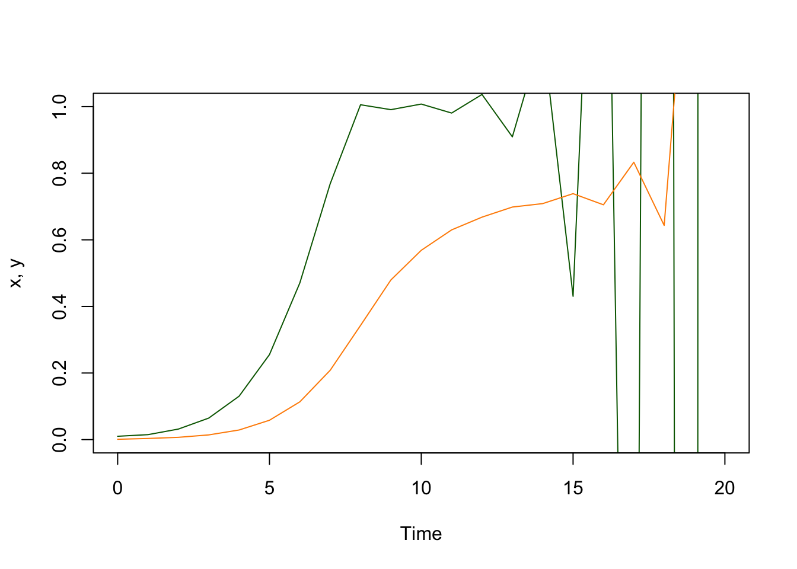
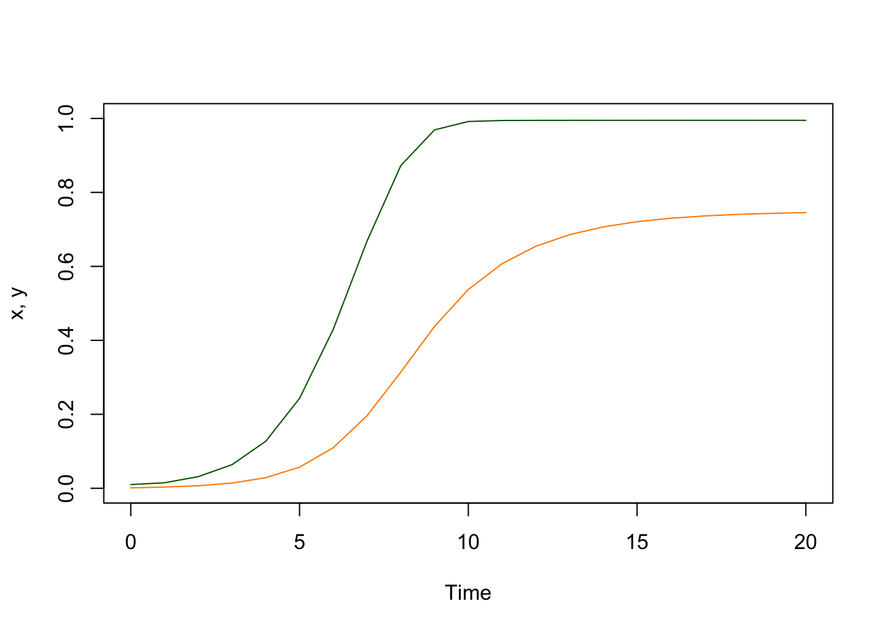

2.1 Discrete Time, Deterministic
We can translate Ross’s basic description of a process into a model, but first, we need to start using mathematical symbols and notation to represent the process. The model itself is formulated as a set of coupled difference equations, but we will write down the equations last. To get there, we must learn about the parts of a model: variables, initial conditions, and parameters.
In the following, we also want to write R code to implement and solve the model. We will be adopting some conventions that end up being very useful. So really, this is a lesson about two things.
2.1.1 Variables
Variables are quantities that we compute and that change over time. In this model, the variables we compute are the fraction of humans and mosquitoes that are infected at each point in time. Since it is a discrete time system, the values of the variables are defined only at integer values of \(t.\)
Let \(x_t\) be the fraction of people who are infected at time \(t,\) and \(0 \leq x_t \leq 1.\)
Let \(y_t\) be the fraction of mosquitoes who are infected at time \(t,\) \(0 \leq y_t \leq 1.\)
2.1.2 Initial Conditions
Since the values of our variables in the next time step (at time \(t+1\)) depend on their values now (at time \(t\)), we can’t really compute anything unless we can say how the process gets started. What are the values of our variables at the beginning of our simulations (usually, at time \(t=0\))?
We set these initial values to be small:
2.1.3 Parameters
The parameters describe the processes that are occurring in the population, the fraction of humans that clear an infection each day, and the fraction of infected mosquitoes that die. Unlike variables, parameters are passed to the model.
Let \(s\) denote the fraction of people who clear infections after one day; \(0 < s < 1.\)
Let \(u\) denote the fraction of mosquitoes who die in one day; \(0 < u < 1.\)
Let \(a\) denote the fraction of mosquitoes who blood feed on a human in a day; \(0 < a < 1.\)
Let \(m\) denote the number of mosquitoes per human; \(m \geq 0.\)
2.1.4 Equations
Finally, we put all this together into a mathematical statement that has translated the description of a process. There are four terms:
The fraction of humans who are infected is \(x_t\); a fraction \(s\) clear infections.
The fraction of mosquitoes who are infected is \(y_t\); a fraction \(u\) die.
The fraction of humans who are infected is \(1-x_t\); a fraction \(m a y_t\) will become infected.
The fraction of mosquitoes who are not infected is \(1-y_t\); a fraction \(a x_t\) become infected.
\[\begin{array}{rl} x_{t+1} &= x_t - s x_t + m a y_t (1-x_t) \\ y_{t+1} &= y_t - u y_t + a x_t (1 - y_t) \\ \end{array}\]
We write a function that computes and returns the updated values of the variables. We adopt a simple naming convention: since this is a discrete time system, we will call the function dts_xy_1. It accepts the variables, which describe the state of the system at the current time (as a named vector) and the parameter values (as a list) and it returns the state of the system (as a named vector):
2.1.5 Simulation
With the R code we developed, we can now compute the values of the variables after one time step. We initialize xy to hold the computed variables over time.
We name the variables so that later we can call them by name.
We can take a peak at the values we computed:
## t x y
## 1.000000000 0.010445000 0.003414167We can iterate over many time steps, storing the values in columns:
# Iterate to compute the values as they change over time
for(t in 2:40){
xy = dts_xy_1(xy, par)
xy_t = rbind(xy_t, xy)
} The way we implemented this, the values of \(x\) and \(y\) are stored in columns:
## t x y
## xy 38 0.9865573 0.7465869
## xy 39 0.9866426 0.7468730
## xy 40 0.9866975 0.7470700We can now plot out the values over the first 40 days
with(data.frame(xy_t),{
plot(t, x, type = "b", ylim = c(0,1), col = "darkgreen", ylab = "x, y", xlab = "Time", pch=15)
lines(t, y, type = "b", col = "darkorange", pch =19)
})
After 40 days, the values of \(x\) and \(y\) are not changing very much:
## x y
## -3.545225e-05 -1.355019e-04If we iterate another hundred days and check again, the differences are effectively zero.
## x y
## 0 0After simulating, the variables reach a steady state, where asymptotically \(x_{t+1} = x_t\) and \(y_{t+1} = y_t\).
2.1.6 Analysis
We can figure out the steady state values are by substituting \(x_{t+1} = x_t = x\) and \(y_{t+1} = y_t = y\) into the equations above, and then solving for \(x\) and \(y\).
\[ \begin{array}{rl} x &= x - s x + m a y (1-x) \\ y &= y - u y + a x (1-y) \\ \end{array} \]
or even easier:
\[\begin{array}{rl} m a y (1-x) &= s x \\ a x (1 - y) &= u y\\ \end{array}\]
The most obvious solution to these equations is \(x=y=0,\) which in these models means that there is no malaria. We call it the disease-free steady state. The equilibrium makes some sense: if there are no infected mosquitoes or infected humans in a deterministic model, there can never be any.
There is another solution where malaria is present. We solve the second equation first:
\[y = a x / (u + a x).\]
We can substitute this for \(x\) into the first equation to get:
\[m a^2 (1-x) = s (u+ax)\] and now we solve for \(x\)
\[x = \frac{\textstyle{ma^2 - su}}{\textstyle{ma^2 + sa}}\] We can write a function to compute this steady state:
2.1.7 Verification
We want to get used to double checking everything to avoid inserting mistakes. One way to do this is to find two or more ways of computing the same thing, for verification.
If we’ve done everything right, we ought to get the same values for the steady states through our analysis and simulation.
## x y
## 0.9867987 0.7475000## x y
## 0.9867987 0.7475000It’s tempting to look at the printout and assume these two numbers are exactly equal. This is the land of computation, so things won’t be exact. We can simply sum up the absolute values of the differences:
## [1] 3.330669e-16If we wanted to reduce this to a simple error check, we should pick a tolerance level – say \(10^{-9}\) – and then just ask if we are closer than that:
check_it_dts_1 = function(xy, pars, tol=1e-9)
{
verify_dts_1(xy, pars) < tol
}
check_it_dts_1(xy, par)## [1] TRUE2.1.8 Packaging Workflows
If we want to repeat tasks, we can simply write a wrapper around other functions that expedite the work. In this case, we want to write a function that solves the equations (i.e. that iteratively computes and stores the values) over some time interval:
solve_dts_xy_1 = function(pars, x0=.01, y0 = 0.001, tmax=100){
xy = c(t=0, x=x0, y=y0)
xy_t = xy
for(t in 1:tmax){
xy = dts_xy_1(xy, pars)
xy_t = rbind(xy_t, xy)
}
return(list(t=xy_t[,1], x=xy_t[,2], y = xy_t[,3], last = xy))
}We can write another function that plots the equations (i.e. that iteratively computes and stores the values) over some time interval:
plot_xy = function(xy_t, add_points = FALSE){with(xy_t,{
llty = "l"
if(add_points == TRUE) llty = "b"
plot(t, x, type = llty, ylim = c(0,1), col = "darkgreen", ylab = "x, y", xlab = "Time", pch=15)
lines(t, y, type = llty, col = "darkorange", pch =19)
})}Now, all the work we did above can be plotted using a single function call:

Now, it is easier to use the models in various ways.
2.1.9 Thresholds
All our analysis worked out well for the parameter values that we chose, but what if we had picked different parameters?
There must be some very low level of mosquitoes, for example, where malaria can’t reproduce. If we reduce \(m\) to \(0.005\) and evaluate the expression at the steady state, we get negative values for \(x\) and \(y\).
## x y
## -0.06666667 -0.25000000What happens if we simulate this? (Let’s set the initial conditions to reasonably high values)

If we look at the equations, it’s easy enough to spot the problem. Since \(x\) and \(y\) must be positive, then it must be true that \[m a^2 > su.\] We call this a threshold condition.
## [1] 0.006666667If we check, we find that this gives us the disease free equilibrium.
## x y
## 0 02.1.10 Numerical Stability
There is another problem with the equations. If we set \(m\) too high, such that at some point \(m a y_t > 1,\) then the whole system eventually crashes:

In discrete time formulations, we must be very careful to ensure that we have formulated a proper model. How can we fix this problem? We have to go back to the assumption that the fraction getting infected is linearly proportional to the number of infective bites. One way to do this is to say that the expected number of bites would follow a Poisson distribution with mean \(may_t,\) so that the fraction getting infected is the zero term from a Poisson:
\[1 - e^{-m a y_t}\]
Now, our equations are the following:
\[\begin{array}{rl} x_{t+1} &= x_t - s x_t + (1-e^{m a y_t}) (1-x_t) \\ y_{t+1} &= y_t - u y_t + a x_t (1 - y_t) \\ \end{array}\]
Now, if we want to compute the steady state, we’re stuck with the problem of solving this:
\[(1-e^{-m a^2 x/(u + a x)}) (1-x) = sx\] It’s surprisingly easy to write down equations, like this one, that we can’t solve with pencil and paper. We can still find a way of computing the steady state, but we have to write R code that solves for \(x\) numerically.
find_eq_dts_2 = function(pars){with(pars,{
f_xx = function(x, pp){with(pp,{
xx = (1 - exp(-m*a^2*x/(u+a*x)))*(1-x) - s*x
y = a*xx/(u+a*xx)
yy = u*y + a*xx*(1-y)
return(xx^2 + yy^2)
})}
xx = optimize(f_xx, c(0,1), pp=pars)$min
yy = a*xx/(u+a*xx)
c(xx, yy)
})}The new equilibrium is at:
## [1] 0.9949026 0.7490406We can just as easily write the code to numerically solve the discrete time system:
dts_xy_2 = function(xy, p){with(as.list(xy), with(p,{
xn = x - s*x + (1-exp(-m*a*y))*(1-x)
yn = y - u*y + a*x*(1-y)
t=t+1
return(c(t=t, x=xn, y=yn))
}))}Once again, we can wrap a function around the solver so that it’s easier to use the code:
solve_dts_xy_2 = function(pars, x0=.01, y0 = 0.001, tmax=100){
xy = c(t=0, x=x0, y=y0)
xy_t = xy
for(t in 1:tmax){
xy = dts_xy_2(xy, pars)
xy_t = rbind(xy_t, xy)
}
return(list(t=xy_t[,1], x=xy_t[,2], y = xy_t[,3], last = xy))
}Now, we can visualize the output and see that we have fixed our stability problem.

## [1] 0.9949026 0.7490406## x y
## 0.9949051 0.7490410Once again, we want to ensure that our code does not have any mistakes, so we write a function to verify our results.
verify_dts_2 = function(pars, x0 = .1, y0=.05, tmax=200){
xyt = solve_dts_xy_2(pars, x0=x0, y0=y0, tmax=tmax)
sum(abs(xyt$last[-1] - find_eq_dts_2(pars)))
}## [1] 2.924525e-06A function to check that it is accurate to some level of tolerance, but the numerical precision is mismatched, somehow.
check_it_dts_2 = function(pars, x0 = .1, y0=.05, tmax=200, tol=1e-5)
{
verify_dts_2(pars, x0, y0, tmax) < tol
}
check_it_dts_2(par3, tmax=200)## [1] TRUE